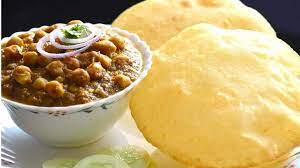

Chole Bhature

Chole Bhature also known as Chana Bhatura is one of the most popular Punjabi dish liked almost all over India. Chole stands for a spiced tangy chickpea curry and Bhatura is a soft and fluffy fried leavened bread.
- Wheat flour
- Chickpea
- Onion
- Pressure cook chickpeas for 10 to 12 whistles or for about 15 to 20 minutes or till they are tender and cooked well.
- Once done then drain all the water and keep the cooked chickpeas aside.
- Stir while sautéing so that the paste does not stick to the pan.